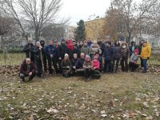

Na Rozmarínke sa pred Vianocami rozdávali darčeky
Tohtoročné predvianočné obdobie je v Základnej škole Rozmarínová ul.1 Komárno spojené so vzájomným obdarovávaním.
Učitelia a rodičia našich žiakov si svoj prvý darček nadelili už v septembri, keď sa dohodli, že v aktuálnom školskom roku budú intenzívne rozvíjať svoju spoluprácu, s cieľom vytvoriť v škole ústretovejšie, bezpečnejšie a podnetnejšie prostredie, v rámci projektu Učiteľ – rodič – dieťa, spolu na jednej lodi. Iniciatívni učitelia a rodičia sa spolu začali častejšie stretávať, viesť otvorenejšie diskusie pri plánovaní spoločných aktivít a konzultovať výchovno-vzdelávacie výsledky žiakov v zložení rodič-učiteľ-dieťa. Výsledkom takto nastavenej spolupráce boli viaceré aktivity, ako
6. jesenný deň zdravia s Rozmarínkou, spoločná brigáda pri zakladaní divokej lúky a zapletaní landartu z vŕbového prútia v prírodnej zóne aktívneho odpočinku na školskom dvore, ale tiež plánovanie ďalších odvážnych aktivít, ktorými budeme posilňovať a motivovať naše spoločné deti k vzdelávaniu.
Ďalší darček dostali učitelia Rozmarínky, ktorí nielenže radi učia, ale aj sami sa radi vzdelávajú, v podobe prvej regionálnej pedagogickej konferencie Učíme sa bez učebníc, ktorú sme v našej škole zrealizovali v spolupráci s renomovanými vzdelávacími inštitúciami a pedagógmi z viacerých kútov Slovenska. Osobitne ma teší, že na konferencii mohli svoje pedagogické majstrovstvo ukázať aj učitelia z nášho mesta. Prednášky o vnútornej motivácii (Martin Kuruc, PF UK Bratislava), o projekte Expedícia (Xavér Gubáš, Indícia n.o.), o rovesníckom vzdelávaní (Silvia Szabóová, ZŠ Rozmarínová KN), o tom, či sú alebo nie sú dôležité domáce úlohy (Mária Tutokyová, Komenkého inštitút), o gamifikácii vo vyučovaní (Silvester Buček, Vĺčatá.sk), o Komenského inštitúte (Veronika Suváková, Komenského inštitút), o Otvorených školách (Zuzana Čačová, Nadácia otvorenej spoločnosti) alebo o tom, ako sa učí v škole LifeFamilyWork Viedeň (Erika Jung), ako aj workshopy Outdoorové vzdelávanie (Katarína Vajkai, ZŠ Pohraničná KN), Mindfulness = všímavý stav mysle (Miriama Glovňová, Komenského inštitút), projekt Civilizácia (Martin Kríž, Indícia n.o.), Zážitkové učenie (Lucia Ondrejkovičová Obenau, Komenského inštitút) a Speakujeme nielen na angličtine (Aneta Kamocsaiová a Annamária Erdélyiová, ZŠ Komenského KN) boli širokospektrálnou inšpiráciou pre každého zúčastneného učiteľa.
V duchu hesla „Spokojný a nadšený učiteľ = spokojný a nadšený žiak“ som ako účastníčka Komenského inštitútu 2018/2019 svoju dotáciu premenila na darček všetkým nadšeným učiteľom Rozmarínky, v podobe pracovného seminára s renomovaným českým psychológom, učiteľom a v súčasnosti najlepším moderným didaktikom Robertom Čapekom. Verím, že jeho podporujúce, klimatické a alternatívne metódy vo vyučovaní, spolu s moderným prístupom k hodnoteniu a sebahodnoteniu žiakov, či k odmeňovaniu a trestom v školskej praxi, alebo nové prístupy vo vedení triednej schôdzky a spolupráce s rodičmi, prinesú aj do našej zborovne potrebnú inšpiráciu a nadšenie, ktoré si už v najbližšej dobe všimnú a následne ocenia naši žiaci aj ich rodičia. Robert Čapek nezostal nič dlžný svojej povesti a aj v našich učiteľoch zarezonoval jeho rečnícky potenciál, hlboké teoretické a praktické vedomosti, ktorými dokáže s obdivuhodnou ľahkosťou v učiteľoch búrať nezdravé ego a zároveň im dvíhať zdravé sebavedomie. Svedčí o tom veľmi pestrá škála reakcií na jeho vystúpenie.
Posledným zo série predvianočných darčekov je zapojenie učiteľov Rozmarínky do projektu Učiace sa školy, zameranému na overovanie modulu Pojatie profesie učiteľa. Aktivity tohto projektu sú orientované na posilnenie učiteľov našej školy, aby z nich boli silné pedagogické osobnosti, schopné inkluzívne spolupracovať medzi sebou, so žiakmi, s rodičmi, s odborníkmi a so všetkými partnermi školy.
Všetky vymenované darčeky sme si mohli nadeliť vďaka spolupráci s Komenského inštitútom z finančných zdrojov Nadácie Orange, Nadačného fondu Telekom a Nadácie ESET.
Za mňa už len jedno veľké poďakovanie všetkým členom našej školskej rodiny, ako aj partnerom a podporovateľom Rozmarínky.
Mgr. Helena Weszelovszká
riaditeľka školy


{kind=link}